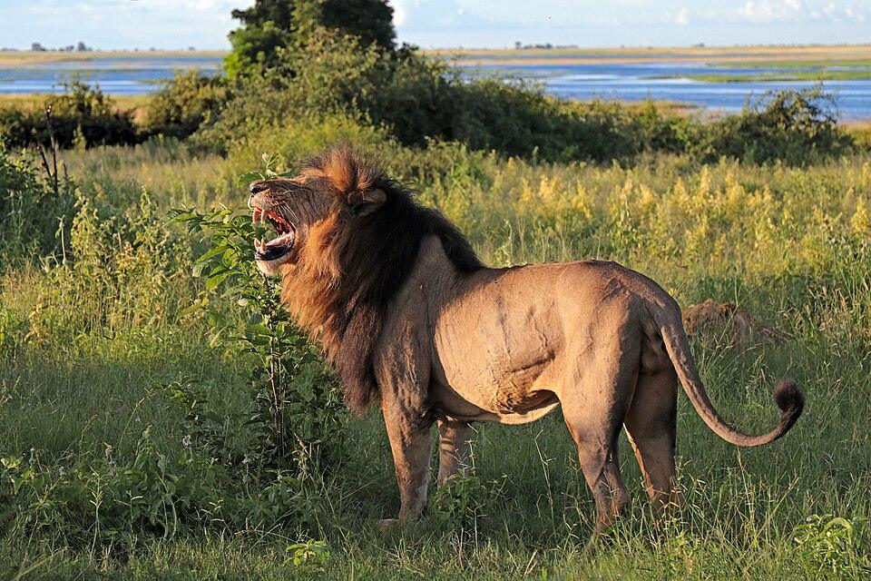

Lion
Vulnerable
Lions are the only big cats that live in family groups, called prides. Females in a pride often hunt together.
- Where they live
- Eastern and southern Africa, plus the Gir Forest in India
- Estimated number in the wild
- About 22,000 to 25,000 in Africa and about 670 in India